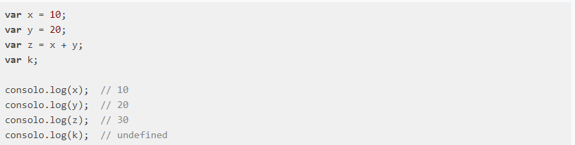
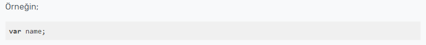

JavaScript Değişkenler
Javascript programlarımızda geçici olarak veri saklamak için oluşturduğumuz alanlara değişken denir.

Tanımlamış olduğumuz a,b ve z değişkenleri bellekte tanımlanan geçici alanlardır.k değişkenine bir değer ataması yapmadığımızdan dolayı undefined değere sahip olur.Bir değişken tanımlamak için var, let ve const anahtar kelimelerini kullanıyoruz.

- Değişkenleri var komutuyla tanımladıktan sonra içlerine değer ataması yapıyoruz ve en sona ; (noktalı virgül) eklememiz gerekiyor.
- Değişkenlere sözel bir atama (string) işlemi yaparken tek tırnak ya da çift tırnak kullanabiliriz.
- Değişkenlere sayısal bir atama yaparken tırnak kullanmamamız gerekiyor. Aksi halde string bir değişken tanımlaması yapmış oluruz.
- Değişken isimleri rakam ile başlayamaz.
- Komut isimleriyle tanımlama yapılamaz.
- Örneğin if ya da switch kelimesi değişken ismi olamaz.
- Büyük küçük harf duyarlılığı vardır.
- Değişken isimlerinde türkçe karakter kullanmamalıyız.
JavaScript dilinde değişken tanımlanırken dikkat edilmesi gerekenler:
- Değişken isimleri sayı ile başlamaz.
1sayi:=1; // yanlış kullanım
sayi1=1; // doğru kullanım
- Değişken isimleri $ yada _ ile başlayabilir.
$sayi1=1; // doğru kullanım
_sayi1=1"; // doğru kullanım
- JavaScript dilinde değişken tanımlanırken “var” ifadesi kullanılır.
var a=1; // doğru kullanım
Yukarıda a isminde bir değişken tanımladık ve değerine 1 sayısını atadık. Ayrıca var ifadesi ile tek satırda birden fazla değişken tanımlanabilir.
var a=5, var b=12, var c=20;